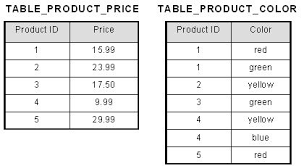
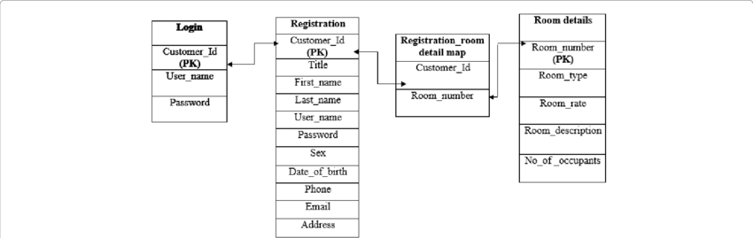
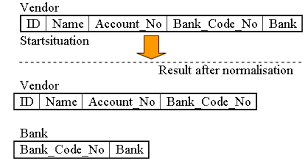
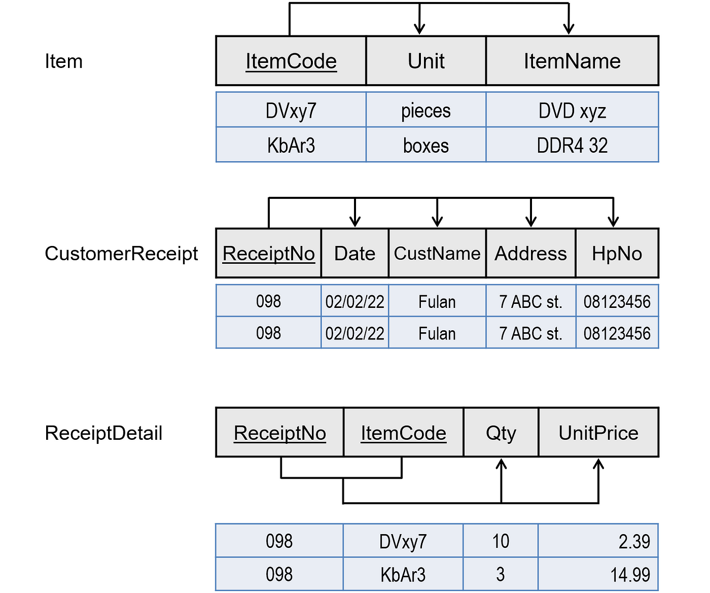

Normalisasi dalam konteks Entity-Relationship Diagram (ERD) adalah proses desain database yang memiliki tujuan untuk mengorganisir dan mengelola data dengan efisien. Dalam normalisasi, tabel-tabel dalam database dibagi dan diatur sedemikian rupa sehingga data disimpan dengan cara yang mengurangi redudansi, memastikan konsistensi, dan menghindari anomali data. Normalisasi ERD mengikuti beberapa tingkat normalisasi, seperti 1st Normal Form (1NF), 2nd Normal Form (2NF), 3rd Normal Form (3NF), dan sebagainya.
Konsep Normalisasi Pada ERD
Berikut adalah penjelasan rinci tentang konsep normalisasi pada ERD:
- 1st Normal Form (1NF):
- 2nd Normal Form (2NF)
- 3rd Normal Form (3NF)
- BCNF (Boyce-Codd Normal Form)
Untuk mencapai 1NF, setiap entitas atau tabel dalam database harus dibagi menjadi atribut atau kolom yang memiliki nilai atomik. Ini berarti bahwa setiap nilai dalam kolom tidak dapat lagi dibagi menjadi bagian yang lebih kecil. Misalnya, jika Anda memiliki kolom "Alamat" yang berisi "Jalan X, Kota Y," maka Anda perlu memisahkan "Alamat" menjadi dua kolom terpisah: "Jalan" dan "Kota."
Tujuan : Menciptakan entitas atau tabel yang memiliki atribut dengan nilai atomik, yang berarti setiap nilai dalam kolom adalah tidak dapat dibagi lagi menjadi bagian yang lebih kecil.
2NF memerlukan bahwa semua atribut non-kunci (atribut yang tidak termasuk dalam kunci utama) dalam tabel harus sepenuhnya bergantung pada seluruh kunci utama, bukan hanya sebagian. Ini menghilangkan redudansi data dan memastikan setiap atribut berada dalam tabel yang sesuai.
Tujuan : Menghilangkan redudansi data dengan memastikan bahwa setiap atribut non-kunci dalam tabel sepenuhnya bergantung pada seluruh kunci utama tabel.
3NF memerlukan bahwa atribut non-kunci tidak boleh transitif bergantung pada kunci utama. Dengan kata lain, atribut non-kunci tidak boleh bergantung pada atribut non-kunci lain dalam tabel.
Tujuan : Menghindari ketergantungan transitif di antara atribut non-kunci dalam tabel dengan memastikan bahwa atribut non-kunci tidak bergantung pada atribut non-kunci lain dalam tabel.
BCNF adalah tingkat normalisasi yang lebih ketat daripada 3NF dan menuntut bahwa setiap ketergantungan fungsional non-trivial dalam tabel harus bergantung pada kunci utama.
Tujuan : Memastikan bahwa setiap ketergantungan fungsional non-trivial dalam tabel bergantung pada kunci utama tabel. BCNF adalah tingkat normalisasi yang lebih ketat daripada 3NF.
Normalisasi ERD membantu memastikan integritas data, mengurangi redudansi, dan mempermudah operasi database. Namun, perlu diingat bahwa normalisasi dapat meningkatkan kompleksitas query dan mengurangi performa dalam beberapa situasi, sehingga perlu dipertimbangkan dengan bijak dalam desain database.